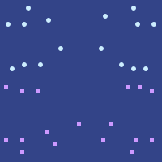

泽独自坐在院子里的一张桌旁，喝着茶，吃一份米饭配蔬菜。他左手拿着手持终端，翻看民本棋的棋路。
一个机器人滑到他跟前。
"mo da cu ja li hen ma?"，它问道。“吃的喝的还好吗？”
机器人屏幕切换成了投票界面。
| mo da cu ja li hen ma? |
|---|
🙁2 🙁 😐 😊 😊2 |
泽想了一会儿，把滑块往右推到大约四分之三的位置。
机器人哔了一声，慢慢滑走了。
泽再次抬起头时，看见芬正朝他跑来。芬到了，坐下。
“你去哪儿了？”，泽问。
“又是语言学训练，”芬答道。“看来班孙培还真觉得我挺适合他们。”
“大赛练得怎么样了？”
“上一个长时跟机器人下了大概五盘，”泽答道。“我感觉已经撞上收益递减了。最后全看这次改的规则是什么。”
“所以最近两盘，我让机器人随机想出新规则，然后照着下。问题是两盘我都轻松赢了：标准民本棋上机器人比我强，可一碰到训练数据里没有的新局面，它们的适应力就差得多。”
“你不能搭条流水线吗——它们想出新规则之后先自对弈微调，练熟了，你再跟那一版下？”
“那要是你能在接下来两个长时里帮我把这套搭起来，我真感激不尽。别忘了，比赛就在明天！”
芬想了想。“我要这么做，就得跟班孙培说我今晚不去了。”
“‘Po so dze go ban’可以等，跟白的比赛是明天。”
“求你了？”
芬又想了几个嘀嗒。“行吧，我去跟他们说今晚不去了。不过下个月我得补上。”
3724年雨月24日
芬和泽沿着斜坡往上走，朝那座山体金字塔去。泽在脑子里过民本棋的棋路；这段累人的攀爬反倒帮他集中精神，压住了心里想往别处飘的念头。
忽然，他感觉有人拍了下他的肩膀。
泽转过身。是白。
“怎么样，期待今天这盘吗？”，她问。“我觉得这对你是个不错的收尾。你妈大概还没太意识到，你能拿到全城第二有多了不起。”
泽脑子里飞快地转着，想找话回敬。
“你要对泽好一点，”芬顶了回去，“等他赢了全国赛，说不定他会拿奖金请你去红郡或者自由城玩一趟。”
“也许还能捎上你妈。”
白的笑僵了一瞬，又回来了。
“谢谢你，芬。”
“不过说真的，咱们还是专心给大家下一盘好棋吧。”
忽然，地面轻轻晃了一下。片刻之后，他们此时已爬到山的三分之一处，凭高望去，只见远处城郊某处冒起一团烟。
“哇，那是什么？”，芬问。
泽掏出他的手持终端，对准那团烟。
“看一下。”
泽举着手持终端，对着那团烟和下方的区域停了一会儿，然后放下。“定位出来了。那是全城最大的计算机芯片制造厂。记得吧，北极人一直拼命拦着我们，不让科技再往前一步。”
“看样子这家厂是国营的。我猜他们只会说是什么事故之类的。”
“哼。”芬咧嘴一笑。
“这些人到底懂不懂‘gie fe kiu kai ci bin hu’里的‘bin hu’？无首。这种东西本来就不该这么集中。”
“还是那句话，这是政府。他们一半人根本不知道自己在干什么，剩下的人里恐怕还有不少，多少都拿着北极人的钱。几十年来，泽国真正聪明、真正有用的东西，都在政府或者大企业之外。”
“不过话说回来，如今我们有很多更小的分布式地下芯片厂。我们没事的。”
“好了，两位，”白插话。“我们真得去比赛了。”
三人继续往上爬。又过了几分钟，他们到了正门，走进隧道。到第三个拐弯处，芬向左去观众席，白和泽向右。他们穿过门，看见穆在等他们。
“欢迎你们俩回来，”穆说。“很期待看你们俩的表现。”
“希望这次改的规则能有点意思。”
“哦，会的。你等着看。”
一个机器人滑过来，端给他们三杯水。泽、白和穆各拿了一杯。
穆举起杯子。“为我们的未来，”她说。"Dze go ba fau gie."
泽有点困惑——“Dze go ba fau gie”意思是“泽国将再度崛起”，这是句很美的话，但用在真正的战斗，或者某种工业、教育活动上，似乎都比用在民本棋锦标赛上更合适。可他还是本能地回应了，跟白同时开口。
"Dze go ba fau gie."
三人把水喝了。
他们坐下歇了几分钟。随后，两扇电梯门开了。
"MU GU GEI FA"，响亮的自动语音播报道。五十嘀嗒后开始。
泽深吸一口气，再缓缓吐出，最后一次在心里默背自己的棋路。
"LE MU GEI FA"。
泽用目光扫过观众席。大部分人他几乎看不清，但整体上，他能感觉到的兴奋比前两盘都足。
"PA GU GEI FA"。
泽又吸了一口气，屏住呼吸，撑过最后剩下的十个嘀嗒，等着那声宣告。
“欢迎来到帕佛盖都民本棋锦标赛第十八年、决赛。今晚，我们将见证全城最具决定性的一盘棋；两位选手的棋力，经 AI 评定，都强过仅仅五年之前的国家冠军。”
“今天到场的两位决赛选手，是两位才华横溢的头脑——一个月前，我们见过他们作为队友并肩作战：泽雷民和白嘉恒。”
“今天，我也很高兴宣布本轮的新规则。两位选手都将拥有一个强大的个人 AI，在对局中协助他们。”
泽的显示界面上忽然弹出一个新标签页。
“不过，选手和他们的 AI 都能完整读取彼此 AI 的思考记录。”
泽消化着这条信息，很快开始琢磨该怎样用这个 AI。他让 AI 按他惯用的风格摆出标准的滑翔机与墙阵型。让他意外的是， AI 竟然知道他的风格是什么。
他在旁边另一个标签页里看到了白的 AI 记录；白在做同样的事，而白的 AI 也知道她的风格。
"MU GU GEI TAU FA"，响亮的自动语音炸响。战斗将在五十嘀嗒后开始。
两个 AI 继续优化各自的滑翔机与墙阵型。到这一步，双方的 AI 都开始针对对方记录里的策略设计反制。
泽开始亲手摆下几处结构，一边复制粘贴 AI 已经做好的部分来提速，一边盯着白的记录，看白的 AI 还没有针对哪些策略做出反制。
"LE MU GEI TAU FA"
泽开始亲手布下最后一件重要结构：一艘载符飞船。他的 AI 已经造了四艘，但他想自己单独造一艘，这样白就看不到，而且前面配一道走法不同的移动墙。他给载符飞船定好路线，让它从 AI 已经建好的一面墙上反射出去，然后沿着棋盘中央向上飞。
"PA GU……"
快啊，泽心想，把载符飞船造完。
"SO …… BI …… ZE …… HA ……"
泽放下最后几格。
"MU …… FO ……"
然后……成了。
泽长长地吐出一口气。
"SHI …… LE …… PA …… TAU FA"
滑翔机开始飞起来。泽的载符飞船从东南角出发向西移动。泽能看到的棋盘范围变大了。
两份 AI 记录里，双方都在全神贯注地开发自己的领地，造出更多滑翔机、飞船和墙，不断扩张。
几百回合之后，泽和白的滑翔机开始互相撞上，接着又撞上彼此的飞船和墙。
又过了几百回合，两人的载符飞船彼此进入了视野。
不久之后，泽的载符飞船从南面的墙上反射出去，开始向北移动。
观众们都盯着大屏幕。

第一次干预回合到了。泽让 AI 去调整前线附近的结构，反正这些变化白马上就能看到。
他在白的 AI 记录里搜寻弱点。找到一个：它压根没想到沿对角线下来的滑翔机攻击。他调低分配给 AI 的资源比例，用这些资源手动向两条对角线各送出一大批滑翔机，掐准时机让一批紧接另一批，去打白的两个基地。他还送出一艘载符飞船，让它比两批滑翔机晚几百回合经过中央。
对局继续。
中路前线的交锋出乎意料地势均力敌。两个 AI 都下得近乎最优，而且双方都能看到对方的落子和思路，几乎没什么使诈的余地。不过白确实把更多资源投向了前线，尤其是西侧；随着几百回合过去，棋盘上开始显出来了。不久，泽在西侧的一艘载符飞船被打穿，炸成一团四散的滑翔机风暴。
泽继续下，一点点打磨棋盘的细节。他知道，自己那次进攻的结果要很久以后才能看到。
第二次干预回合到了。
泽能想出的最好办法，是在他沿场地中央缓缓北飞的那艘载符飞船旁边多建几座工厂。除了沿对角线的进攻，这是唯一一个白无从得知的结构——除非他的 AI 决定无视泽让它只专注被分配领域的指令，在记录中途把飞船的位置说漏嘴。泽决定不去想这种可能；真发生了他也做不了什么。他在西侧又添了几道墙。
又过了许多回合。西侧，白继续推进。白的一些滑翔机闯进泽在西南的基地，毁掉了他两个符记。泽看着自己的载符飞船一路朝西北去。
然后，滑翔机忽然从西、北、东三面朝那艘飞船扑来。它很快崩解，炸成一片残骸和十几架滑翔机。到那一刻，泽才明白发生了什么。白的 AI 没考虑对角线，根本不是失误。是白故意让 AI 专注其他方向，而她自己在对角线上布下了纵深的多层防御。那是个陷阱，泽结结实实地踩了进去。

穆对泽生出一阵失望。十七比二十二，她想。他怎么会踩进那个陷阱，自己又想不出任何有意思的东西？他在中央有一艘飞船向北飞，可那又怎样？白的基地对沿对角线的进攻防得很好，泽那艘飞船到达北侧的胜算也不大。除非泽拿出什么完全出人意料的东西，她想，这盘会变成一场消耗战，而消耗战只会越来越偏向白。
一组意料之外的滑翔机又打掉了泽的两个符记，一个在场地中央略偏西南，另一个在中央偏西、靠近南端。还有一组滑翔机出人意料地打向泽东南的基地，却撞在如今已准备充分的墙上，没能得手。
房间另一侧，芬坐在条件差些的普通观众席上，也惊恐地盯着棋盘。
终于，泽脑子里有什么咔哒一声对上了。
“取我最西边的第四个符记，”他吩咐 AI。“取你能想出的最好的十六种策略。在那个符记附近造一座能执行其中每一种策略的工厂。让它由一架从西南飞来的滑翔机触发，具体选中哪种策略，取决于滑翔机的类型和撞上的时刻。然后，在我西边第二个符记附近，造出那架滑翔机。这次干预回合，把八成资源投到这上面。”
AI 开始细致地推演，动手实现那座工厂和那架滑翔机。
白的 AI 开始推演针对全部十六种策略的反制，但很快撞上了极限：它没法同时对全部十六种都做出最优防御。
白的 AI 也把精力放在加强她自己西翼的防御上。泽的第一次豪赌奏效了，他意识到：白本人没意识到她在西侧造成了多大破坏，也没意识到泽为此补救得多么少。所以她和她的 AI 都没意识到，到这时，泽西边第四个符记可能已经在场地中央了。
接着，泽开始动手布局他的第二次豪赌。他用没有分配给 AI 的资源，在工厂南边加了一块砖，挡住 AI 正要送出的那架滑翔机，又添了两架从南面来的自己的滑翔机。
干预回合结束。工厂的一部分在干预回合里建成，剩下的继续由滑翔机用附近的石阵实时搭建。
几百回合后，泽的 AI 从西边送出的那架滑翔机被泽放下的那块砖挡了下来。在那之后又过了几百回合，泽手动送出的滑翔机撞上工厂，把它激活了。
工厂选中的策略，不在白的 AI 重点谋划过的那四种之内。而且它出现的位置也是白没料到的：棋盘中央和北缘之间的中点。工厂迅速开始产出载符飞船，朝东移动，同时涌出一片向北去的滑翔机风暴，再从石阵和白自己的墙上弹开，转向西边。白和她的 AI 完全被打了个措手不及。
等下一次干预回合到来时，泽的飞船已经深深插到白在东侧的防线之后。泽的 AI 借机设计出一片滑翔机风暴，从背后攻击白的侧翼；泽又添了几架自己的滑翔机去打白东北的基地——这些他亲手造，免得出现在记录里。
又过了五百回合，棋盘已经大不一样。
到这时，穆不再凝重地摇头，芬脸上的惊恐也变成了兴奋的笑容。
十四比十一。泽又领先了。而且他的局面更好。
很快，下一次干预回合到了。泽想，这回只要照搬同样的策略，只是要打得更近更快：立刻在东北造出许多滑翔机工厂，至于它们确切的样式和方向，交给一个十回合后才会出现的触发器来决定。白看不到触发器的内部逻辑，而那一块是泽亲手设计的，所以不会出现在记录里。
白试图照搬泽的策略。泽把一半资源平摊着加固防御，不去刻意耍聪明算计白。他知道自己相当安全：白在他防线后面没有任何布置，而他在白的防线后面有。
五百回合后，双方的攻势都见了分晓。泽的成了，白的没成。白唯一值得一提的战果，是毁掉了泽在西南的基地里剩下的符记。
十二比六。
白认输了。
观众欢呼起来。
“恭喜你们俩——”穆开口说话，她和泽、白一同站在休息室里。
“恭喜你，泽。你非得等到我们最后一个赛季才赢我。”
“白，你今天下出了这辈子最好的一盘棋。”
穆停了一会儿。
“祭司们都不知道你们俩会想出什么来。他们告诉我，他们想让这盘棋稍微……真实一点——但他们也和别人一样好奇，那到底意味着什么。”
“真实？”白难以置信地叫道。“AI 能互相读心，这哪里真实了？”
“我一开始也觉得这说法疯得离谱。但越想，我越觉得他们有道理。”
“比如看维里迪亚的掌舵会体系。那是政府里最不透明的一块——连掌则人彼此都不知道对方是谁——可正因如此，它也是最值得信任、最没法被腐蚀的一块。合议庭也一样：匿名、从大池子里随机抽出的委员会。”
“但议会是透明的，所以一到议会的直接决策——大型基础设施、外交、医疗，所有它出钱的事——人人都来钻空子、算计它。二次方资助也一样，其实更糟。掌则人、监审官和合议庭法官并非完全独立——批准他们的还是参议院委员会——但至少中间隔了一层，而且这些职位还由预测分数把关。”
“这就是这盘棋教给我们的道理。在真实世界里，光会思考还不够，还得会藏住自己的想法——有时候，甚至要对自己的盟友、或你本该服务的人藏住。”
泽和白都盯着穆。
“总之，你们俩今天都表现得极其出色。”
一个机器人滑进来，拎着两个包，其中一个侧面写着数字1，另一个写着数字2。
穆把第一个包递给泽，第二个递给白。
泽和白都坐下，开始看包里的东西。一块纪念牌，一张刮开后只能扫一次的码券，里面装着一些密码学代币和凭证，还有几件小礼物：一只杯子、一支手写笔，和一支臭氧电动水消毒笔。
白开始仔细研究每一件礼物。泽则立刻动手刮掉码券的覆盖层，掏出他的手持终端准备扫。他想给妈妈买一台新的算力盒，已经盼了好几个月，到现在还不敢相信自己终于真的能买了。
穆站起身。
“希望你们俩好好休息，”她说，转身往门外走。
穆一走，泽就发现他多收到了一件白没有的礼物：一封深紫色的信，正面写着一行字。
“仅供泽本人阅看”
泽停下手里的刮码动作，把信收进了口袋。
Zei was sitting alone at a table in a courtyard, drinking a tea and eating a rice and vegetable dish. In his left hand, he held his hand device, reviewing Minpentai strategies.
A robot slid up to him.
"mo da cu ja li hen ma?", it asked. "Is the food and drink good?"
The screen on the robot turned into a voting view.
| mo da cu ja li hen ma? |
|---|
🙁2 🙁 😐 😊 😊2 |
Zei thought for a few moments, and moved the bar about three quarters of the way to the right.
The robot beeped, and slowly slid away.
When Zei looked up again, he could see Fin running up to him. Fin arrived, and sat down.
"Where have you been?", Zei asked.
"More linguistics training", Fin replied. "Looks like the Bansunpei think I'm actually a good fit for them."
"How is training for the big game?"
"Did about five games against the bots in the past longhour", Zei replied. "I feel like this is already hitting diminishing returns. It's all going to hinge on what the rule change this time is."
"So in my last two games I asked the bots to come up with random rule changes, and played against them. Problem is, I won easily both times: the bots play better than me on stock Minpentai, but they are much worse at adapting to any new situation they don't have training data for."
"Can't you make a pipeline where once they come up with the new rule, they self-play finetune to get good at it, and then you play against that?"
"Well if you can go help spin that up for me in the next two longhours, I'd much appreciate it. Game is tomorrow, remember!"
Fin thought briefly. "If I do that I'll have to tell the Bansunpei I am skipping tonight then."
"'Po so dze go ban' can wait, the game against Bai is tomorrow."
"Please?"
Fin thought for a few ticks more. "Okay fine, I'll tell them I'm skipping. But I'll have to make it up with them next month."
3724 Rainmoon 24
Fin and Zei walked up the slope toward the mountain pyramid. Zei went through Minpentai strategies in his mind, as the tiring climb helped him concentrate, suppressing his mind's desire to wander toward anything else.
Suddenly he felt a tap on his shoulder.
Zei turned around. It was Bai.
"So, excited about today's game?", she asked. "I think it'll be a good finish for you, I don't think your mom quite realizes how impressive it is that you are going to come in second across the whole city."
Zei's mind raced for a retort.
"You know if you were nicer to Zei", Fin snapped back, "he might pay for your next trip to Redshire or Freetown from the prize money when he wins the nationals."
"Maybe bring along your mom too."
Bai's grin faltered for a moment, then returned.
"Thank you, Fin."
"But seriously, let's just concentrate on giving everyone a good game."
Suddenly, the ground shook slightly. A few moments later, from their high vantage point already a third of the way up the mountain, they could see a cloud of smoke emerging in the distance, somewhere in the outskirts of the city.
"Whoa, what is that?", Fin asked.
Zei took out his hand device, and pointed it at the cloud of smoke.
"Let's check."
Zei held his hand device pointed at the cloud of smoke and the area below for a moment, and then put it down. "Geolocated it. It's the largest computer chip manufacturing facility in the city. Remember, the Arctics have been trying hard to stop us from progressing any more in our technology."
"Looks like this facility was government-run. I imagine they'll just say it was an accident or something."
"Heh", Fin smirked.
"What part of the 'bin hu' in 'gie fe kiu kai ci bin hu' do these people not get? No head. You're not supposed to centralize stuff this much."
"Again, this is government. Half of them don't understand what they're doing, and many of the rest are probably on the payroll of the Arctics themselves in some form. All of the actually smart and effective stuff in Dzego has been outside of government or the big corporations for decades."
"But anyway, we have lots of smaller, distributed underground fabs these days. We'll be fine."
"Okay, guys", Bai interjected. "We have to actually get to the game."
The three of them resumed climbing. After a few more minutes, they arrived at the main door, and entered the tunnels. On the third turn, Fin turned left to go to the audience section, and Bai and Zei turned right. They walked through the door, and saw Mu waiting for them.
"Welcome back to you both", Mu said. "Excited to see how you both perform."
"I hope the rule change this time is going to be good."
"Oh, it will be. You'll see."
A robot slid toward them, and gave them three glasses of water. Zei, Bai and Mu each took a glass.
Mu raised the glass. "To our future," she said. "Dze go ba fau gie."
Zei felt slightly confused - "Dzego will rise again" was a beautiful thing to say, but it seemed more appropriate for either an actual battle or some kind of industrial or educational activity than for a Minpentai championship game. But he nevertheless instinctively replied back, at the same time as Bai.
"Dze go ba fau gie."
The three of them drank their water.
They sat down and rested for a few minutes. Then, two elevator doors opened.
"MU GU GEI FA", the loud automated voice announced. Starting in fifty ticks.
Zei breathed in and out, and recited his strategies in his head for the last time.
"LE MU GEI FA".
Zei scanned the audience with his eyes. He could barely see most of them, but in the aggregate he could make out more excitement than he saw in both of his previous two games.
"PA GU GEI FA".
Zei breathed in again, and held his breath for the last remaining ten ticks until the announcement.
"Welcome to the final round of the eighteenth year of the Minpentai tournaments in Pafogai Du. Tonight, we will witness the most decisive game in our entire city, between contestants whose playing skills have both been rated by AI as better than the national champions of only five years before."
"Today, we have our two finalists, two brilliant minds whom we saw fight side by side as teammates a month earlier: Zei Leimin and Bai Jahen."
"And today, I am also pleased to announce the new rule for this round. Both players will have access to a powerful personal AI, which will be able to assist them in their gameplay."
A new tab suddenly opened up on Zei's display.
"However, the players and their AIs will have full read access to the thought transcripts of each other's AI."
Zei took in the information, and quickly began to formulate his thoughts about how he would use the AI. He asked it to set up standard glider and wall formations, in his own style. To his surprise, the AI knew what his style was.
He saw Bai's AI transcript in a separate tab to the side; Bai was doing the same, and Bai's AI also knew her style.
"MU GU GEI TAU FA", the loud automated voice blared. The battle begins in fifty ticks.
The AIs kept optimizing their glider and wall formations. At this point, both AIs started designing countermeasures to the strategies in the other's transcripts.
Zei started planting a few structures by hand, speeding up his work by copying and pasting pieces of what the AI had already made, looking attentively at Bai's transcript to see what strategies Bai's AI had not yet built countermeasures to.
"LE MU GEI TAU FA"
Zei started planting one last major structure by hand: a symbol-carrying spaceship. There were already four created by his AI, but he figured that he would make one all on his own, so that Bai would not see it, and with a different style of moving wall in front of it. He aimed the symbol-carrying spaceship so that it would reflect off a wall that his AI had already constructed, and then move upwards along the middle of the game field.
"PA GU..."
Come on, Zei thought, finish the symbol-carrying spaceship.
"SO ... BI ... ZE ... HA ..."
Zei put down a few last squares.
"MU ... FO ..."
And... done.
Zei let out a long breath.
"SHI ... LE ... PA ... TAU FA"
Gliders started flying. Zei's symbol-carrying spaceship started moving west from the southeast corner. The portion of the game field that Zei could see increased.
Both AI transcripts were focused intensely on exploiting their territories, building more gliders, spaceships and walls, and expanding.
After a few hundred turns, Zei and Bai's gliders began to crash into each other, and then into each other's spaceships and walls.
And a few hundred turns after that, their symbol-carrying spaceships got within sight of each other.
Shortly after that, Zei's symbol-carrying spaceship reflected off the wall in the south, and began moving north.
On the big screen, the audience watched.
The first intervention turn came. Zei let his AI do the work adjusting structures near the frontline, as the consequences would be immediately visible to Bai anyway.
He scanned Bai's AI's transcript for weak points. He found one: it was not thinking at all about glider attacks coming down the diagonals. He toned down the amount of resources allocated to the AI, and used those resources to manually send a large number of gliders down both diagonals, targeted so that one would pass right after the other, to strike both of Bai's home bases. He also sent a symbol-carrying spaceship, targeted to pass the center hundreds of turns after both sets of gliders.
The game continued.
The battle along the front lines in the middle was surprisingly even-handed. Both AIs were playing near-optimally, and there was little opportunity for trickery because both sides could see each other's moves and thoughts. However, Bai did put more resources toward the frontline especially on the west side, and as the hundreds of turns went on, it began to show on the board. Soon, one of Zei's symbol-carrying spaceships on the west was breached, and it exploded into a storm of gliders flying in all directions.
Zei kept playing, optimizing the minutiae of the game board. He knew that he would not get to see the results of his attack for a long time.
The second intervention turn came.
The best that Zei could come up with was constructing more factories beside his symbol-carrying spaceship that was slowly flying north along the middle of the field. Aside from the attack down the diagonal, this was the one structure that Bai had no way of knowing about - unless his AI decided to ignore Zei's instruction to focus exclusively on the domain it was assigned to, and blurted out the spaceship's position mid-transcript. Zei decided to ignore that possibility; not much he could do about it anyway. He put up more walls along the west side.
More turns passed. On the west side, Bai continued to advance. Some of Bai's gliders got into Zei's base in the southwest, and destroyed two of his symbols. Zei watched as his symbol-carrying spaceship made its way toward the northwest.
Then, suddenly, gliders flew at the spaceship from the west, north and east side. It quickly crumbled, and exploded into rubble and a dozen gliders. At that point, Zei realized what had happened. Bai's AI's lack of thought about the diagonals had not been a mistake at all. Rather, Bai had deliberately directed the AI to focus on the other directions, and she had put up a strong multilayered defense along the diagonals herself. It had been a trap, and Zei had fallen squarely into it.
Mu felt a pang of disappointment in Zei. Seventeen symbols to twenty-two, she thought. How could he have fallen into that trap, and not come up with anything interesting himself? He had one spaceship going north in the middle, but so what? Bai's bases were well protected against attacks along the diagonals, and Zei's spaceship did not have excellent chances of reaching the north side. Unless Zei came up with something totally unexpected, she figured, this would turn into a game of attrition, which would only shift further in Bai's favor.
An unexpected set of gliders knocked out another two of Zei's symbols, one slightly southwest of the center of the field, and another slightly west of the center near the south end. Another set of gliders unexpectedly hit Zei's southeast base, but bounced off harmlessly against now well-prepared walls.
Sitting on the other side of the room, in less comfortable public seating, Fin gazed with fear at the gameboard as well.
Finally, something inside of Zei's mind clicked.
"Take my fourth westernmost symbol", he told the AI. "Take the best sixteen strategies that you can come up with. Construct near that symbol a factory capable of executing each of those strategies. It should be activated by a glider coming in from the southwest, and the exact strategy chosen should depend on the type of glider and the time it hits. Then, near my second westernmost symbol, make that glider. Allocate eighty percent of resources this intervention turn to this."
The AI started thinking in detail, implementing the factory, and the glider.
Bai's AI started thinking about countermeasures to all sixteen strategies, but soon hit a limit: it could not optimize defenses against all of them at the same time.
Bai's AI also focused on increasing defenses across her own western flank. Zei's first gamble paid off, he realized: Bai herself did not realize just how much damage she had done on the west side, and just how little Zei had done to compensate. And so neither she nor her AI realized that by this point, Zei's fourth westernmost symbol could be in the middle of the field.
Then, Zei went to work on his second gamble. He used the resources he had not allocated to the AI to add a brick south of his factory to block the glider that the AI was sending, and add two of his own gliders coming in from the south.
The intervention turn ended. Part of the factory had been built during the intervention turn, the rest continued to be constructed in real time out of nearby rock formations by gliders.
A few hundred turns later, the glider sent by Zei's AI from the west was blocked by the brick that Zei had put in place. A few hundred turns after that, the gliders that Zei sent manually crashed into the factory, and activated it.
The factory picked a strategy that was none of the four that Bai's AI had focused on planning for. And it was coming from a place that Bai had not expected: the halfway point between the center of the board and the northern edge. The factory quickly started generating symbol-carrying spaceships that began to move toward the east, and a storm of gliders that moved north, and then bounced off of rock formations and Bai's own walls to move toward the west. Bai, and her AI, were caught completely by surprise.
By the time the next intervention turn came, Zei's spaceships had gotten well behind Bai's lines on the east. Zei's AI took the opportunity to design a storm of gliders to attack Bai's flanks from behind, and Zei added a few of his own gliders to attack Bai's northeastern base - building them himself so that they would not appear in the transcript.
Five hundred turns after that, the game board looked very different.
By this point, Mu's solemn head shaking and Fin's expression of fear had both turned into excited smiles.
Fourteen to eleven. Zei was winning again. And he had a better position.
Soon, the next intervention turn came. At this point, Zei figured, he would just repeat the same strategy, though a more near-term version of it: immediately create many glider factories in the northeast, and have their exact style and direction be set off by a trigger that would only appear in ten turns. Bai could not see the exact internal logic of the trigger, and Zei designed that piece himself, so that it would not appear in the transcript.
Bai attempted to copy Zei's strategy. Zei spent half his resources generically shoring up his defenses, without attempting to be particularly clever in outsmarting Bai. He was reasonably safe, he knew: Bai simply did not have any positions behind his lines the way he had behind Bai's.
Five hundred turns later, both attacks came to fruition. Zei's succeeded, Bai's failed. Bai's only significant accomplishment was destroying the remaining symbols in Zei's southwestern base.
Twelve to six.
Bai resigned.
The audience cheered.
"Congratulations, you two-", Mu began to speak, standing in the waiting room along with Zei and Bai.
"Congratulations, Zei. You only had to wait until our last season to beat me."
"You played the best game of your life today, Bai."
Mu paused for a few moments.
"The priests did not even know what you two would come up with. They told me that they wanted to make the game a little more ... realistic - but they were as curious as anyone else to find out what that means."
"Realistic?", Bai exclaimed incredulously. "How is it at all realistic that AIs can read each other's minds?"
"It sounded crazy to me too. But the more I think about it, the more I've come to see their point."
"Look at the Veridian Steering system, for example. It's one of the most opaque parts of the government - even the Keepers don't know who each other are - and yet one of the most trustworthy and incorruptible parts precisely for that reason. Similar for the Courts - anonymous, randomly selected committees out of a large pool."
"But the Parliament is transparent, and so when it comes to the Parliament's direct decisions - large-scale infrastructure, foreign policy, healthcare, all the things that it's funding - everyone keeps exploiting and outsmarting it. Same with the quadratic funding - actually, it's even worse. Keepers, Sentinels and Court judges are not fully insulated - it is still Parliament committees that are approving them - but at least there's a layer of indirection there, and those positions are also gated by prediction scores."
"That's the lesson. In the real world, it's not just thinking well that matters, it's also hiding your thoughts - sometimes, even hiding your thoughts from your allies or the people you're meant to serve."
Zei and Bai both stared at Mu.
"Anyway, you've both performed extremely well today."
A robot slid in carrying two bags, one with the number 1 on the side and the other with the number 2.
Mu handed the first bag to Zei and the second bag to Bai.
Zei and Bai both sat down and started looking at the contents inside their bags. A plaque, a scratch-off one-time-scannable code containing some cryptographic tokens and credentials, and smaller gifts: a cup, a handwriting instrument, and an ozone-based electric water disinfection pen.
Bai began studying all of the gift items in detail. Zei immediately started to scratch off the cover from the scannable code, and took out his hand device to prepare to scan it. He had been hoping to be able to buy his mom a new compute box for many months now, and he still could not believe that now he could finally actually get it.
Mu stood up.
"I hope you both have a good rest", she said, as she turned and began to leave the room.
As soon as Mu was gone, Zei noticed that he got one gift that Bai did not: a dark purple letter, with an inscription on the front.
"For Zei's eyes only"
Zei stopped scratching the cover on the scannable code, and instead put the letter into his pocket.